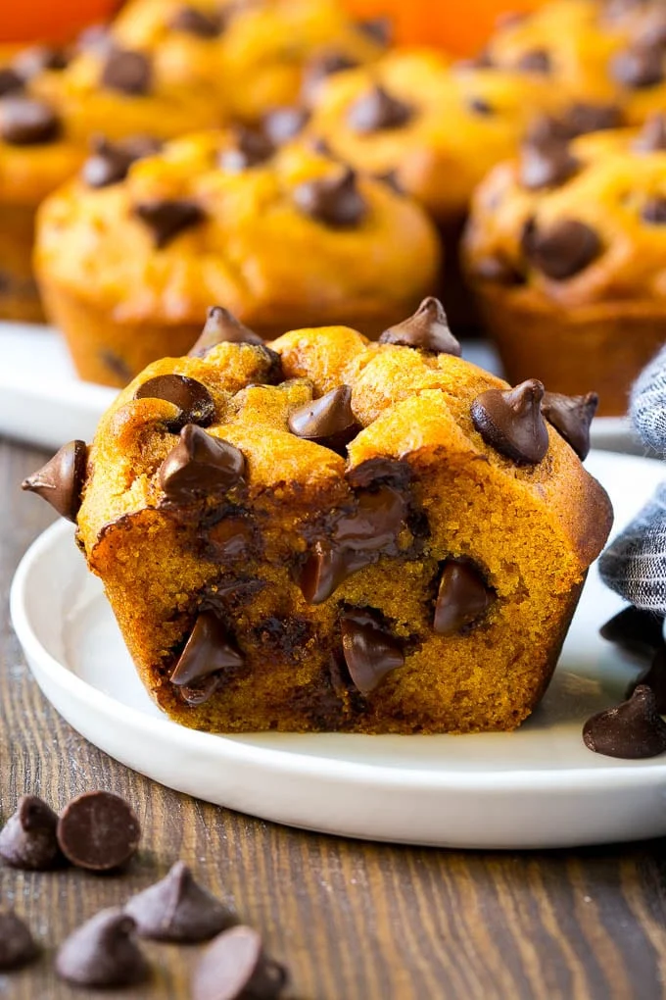

Return to homepage
Pumpkin Muffins

Image: Pumpkin Chocolate Chip Muffins / Sara, Dinner at the Zoo
Description
Prep Time: 10 minutes
Total Time: 25 minutes
These pumpkin chocolate chip muffins are light and tender treats full of warm spices and plenty of chocolate chips.
Pumpkin muffins make for a great dessert, after school snack or party offering.
Ingredients
- 2 eggs
- 1 cup granulated sugar
- 1 cup pumpkin puree
- 3/4 cup vegetable oil
- 1 1/2 cups all purpose flour
- 1 teaspoon baking soda
- 1/2 teaspoon baking powder
- 1 1/2 teaspoons pumpkin pie spice
- 1/2 teaspoon vanilla extract
- 1/4 teaspoon salt
- 1 1/2 cups semisweet chocolate chips
- cooking spray
Instructions:
- Preheat the oven to 400 degrees F. Coat a 12 cup muffin tin with cooking spray, or you can use paper liners.
- Place the eggs, sugar, pumpkin puree and oil in a bowl. Whisk until smooth.
- Add the flour, baking soda, baking powder, pumpkin pie spice, vanilla extract and salt to the bowl. Stir until just combined.
- Fold in 1 cup of chocolate chips.
- Divide the batter evenly among the 12 muffin cups and sprinkle the remaining chocolate chips over the tops of the muffins.
- Bake for 15 minutes, or until lightly browned and a toothpick inserted in the center of a muffin comes out clean.
- Cool for 5 minutes in the pan, then transfer the muffins to a wire rack to cool completely.
- Serve, or store the muffins in an airtight container for up to 5 days.